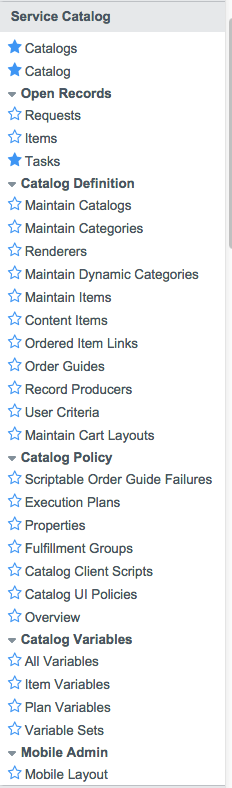

Service Catalog Management
| |
Note: This article applies to Fuji and earlier releases. For more current information, see Service Catalog Management at http://docs.servicenow.com
The ServiceNow Wiki is no longer being updated. Visit http://docs.servicenow.com for the latest product documentation. |
Contents
1 Overview
Service catalogs provide a customer-facing view of available service and product offerings provided by departments within the organization. This allows organizations to promote these offerings in a structured and easily navigable way, and encourages customers to access catalogs to serve their own needs.
A well-defined and managed service catalog provides:
- A self-service opportunity for customers.
- A single portal to present all service and product offerings.
- A standardized approach to request fulfillment.
- Management of customer expectations.
The aim of service catalog management is to ensure the accuracy and availability of the items provided within the catalogs.
The Service Catalog application allows you to define and manage all aspects of your service catalogs, including the ability to define the available catalog items, define specific request fulfillment workflows, and create customizable catalog portal pages.
2 Video Tutorial
This video introduces the service catalog application.
| ServiceNow Service Catalog Demo |
|---|
3 Setting Up a Service Catalog
Administrators and catalog administrators, users with the catalog_admin role, can use the Service Catalog application to define service catalog content and layout.
Administrators and catalog administrators can define and manage multiple service catalogs, starting with the Eureka release.
A typical service catalog setup process involves the following steps.
- Assign roles to those users who are working with the service catalog.
- Customize the service catalog homepage to meet your requirements.
- Define content to provide in the service catalog:
- Catalog items: the goods and services available within the catalog.
- Categories: the groups of items displayed on the catalog home page.
- Variables: the options available for tailoring a catalog item to meet specific needs.
- Define request fulfillment processes, the procedures your organization uses to deliver ordered catalog items.
Administrators and catalog administrators can further extend the service catalog to provide more powerful features, using specialized catalog items, configuration options, and scripting functions. For example, administrators can customize the checkout process used when ordering catalog items.
4 Roles
| Role Title [Name] | Description |
|---|---|
| Administrator [admin] | Can manage all aspects of the Service Catalog application, including scripting functions such as creating UI macros or business rules. |
| Catalog administrator [catalog admin] | Can manage the Service Catalog application, including catalogs, categories, and items, but not including scripting functions available to administrators. |
5 Menus and Modules
The Service Catalog application contains these modules:
|  |
|
{kind=link}
6 Enhancements
6.1 Fuji
- Administrators and catalog administrators can use user criteria to define reusable access controls for items and categories. Using user criteria stops the usage of entitlements defined.
- Administrators and catalog administrators can use cart layouts to define layouts and functions for your cart without scripting.
- The service catalog GUI is restyled. Buttons, breadcrumb trails, and headers now appear consistent with the other areas of the product.
6.2 Eureka
- Administrators and catalog administrators can create and manage multiple service catalogs.
- Catalog managers and catalog editors can use the catalog item designer to create and maintain catalog items, enabling distributed service catalog administration.
- Administrators can run order guides automatically from within a workflow or a server script.
- Administrators and catalog administrators can create filters to show which variables users select when they order items.
6.3 Dublin
- Administrators can create service catalog record producers directly from the table record.
- Users can access the service catalog from mobile devices.
- On catalog item records, the Model field is now visible by default. The field is automatically populated for items created by publishing models.